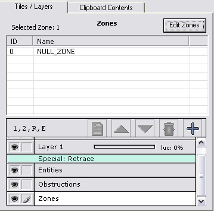
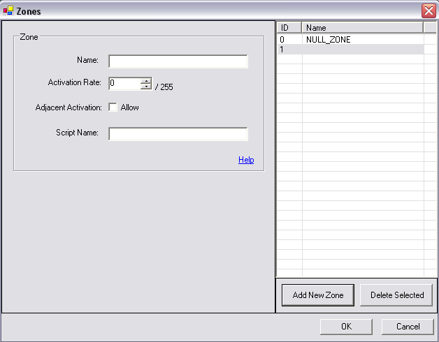
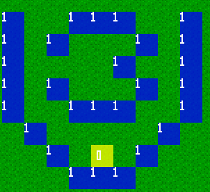

Chapter 4:
Zones; Where, What and How
Zones:
As stated in the beginning zones call scripts based on certain conditions. They tell Verge where it can be activated, how it can be activated, and what happens when
it is activated.
Maped3: Placing Zones

Placing a zone and editing its properties is very similar to adding an entity, but it is far simpler!
First click on the "Zones" layer, in the layer box on the right of the map editor. (You'll probably have to scroll down to find it.)
Next click the "Edit Zones" button that will appear fairly close to it.
On the new window that appears, click the "Add New Zone" button, and we'll now be able to edit our new zones properties.

As you can see there isn't as much to worry about when dealing with zones. Let's go through our options.
- Name: This is for us to remember what the zone does. If stepping on this zone caused the player to lose money, we might call it "Take Gold". It doesn't effect
the engine at all.
- Activation Rate: This tells us how likely the Script we want the zone to call, will actually be called. It's out of 255, meaning, the closer to 255 the number is
the more likely it will be called. I'll use the same example as I did before. We could litter our map with this zone, and have it call a script which starts
a battle system. The lower the number, the less likely a battle will be called. This is how we can make Random Battles in Verge. :)
If we set this to 255 the script will always be called, and if we set it to 0, the script will never be called, unless we check the "allow" box beside.....
- Adjacent Activation: When the "allow" box is checked, we can activate this zone by standing beside it and pressing the activation key on our keyboard/game pad.
Refer back to the image from Chrono Trigger.
 Naturally our initial idea
might be to have the Shopkeeper entity's "onActivation" property, call a shop script. However, notice that there is a counter
between Chrono and the Shopkeeper. We wouldn't want Chrono and his party to be able to walk through it, so how would we be able to call
the shop script, if we can quite reach the shop keeper? Figured it out? That's right, we could use a zone!
Naturally our initial idea
might be to have the Shopkeeper entity's "onActivation" property, call a shop script. However, notice that there is a counter
between Chrono and the Shopkeeper. We wouldn't want Chrono and his party to be able to walk through it, so how would we be able to call
the shop script, if we can quite reach the shop keeper? Figured it out? That's right, we could use a zone!
The brightly coloured area represents where the zone would be placed. Zones, like tiles, are 16x16 squares. How this relates to "Adjacent Activation"
is that because the area the zone is on is obstructed, we cannot activate it by walking on it. By checking the "allow" box, we set it so
that if the player was to press the activation key while beside and facing the zone, it would call the script we will assign to the zone. In this case, we'd call
our Shop script. (If we had one).
- Script Name: Finally we have the script name. This is exactly the same as an entity's "onActivation" property. In the box we put
the script from our maps ".vc" file, that we want this zone to call.
Zones in action:
So let's create a new script to test our zone. We'll use the MessageBox()function again. For practise, see if you can create a new script
without resorting to the one I am about to make, and try to get it to work on your own. If you can't get it, don't fret. It's all apart of the learning process. :)
void TestZone()
{
MessageBox("I'm a zone!");
}
In the "Script Name" box, put "TestZone". Click "Ok", choose it from the list and place it anywhere on the map you want
it to go. It will appear as a blue 16x16, square with a number on it.
I also suggest adding another tile on there as well, and placing the zone over top of it. That way you'll be able to easily find it
when you run your game.
If you remember what happened after we assigned and activated our "TalkToCrystal" script, the "TestZone" script will be very similar. The only difference will be the message.
Go ahead and experiment with the zones properties and see first hand how you can manipulate its behaviour.
Multiple Zones:
If you have a script that needs to be called via a zone, and appears in multiple places on your map, you do not have to create
a new zone for every area that you want to call the same script. You can place as many of the same zone on your map as you would like.
To Summarize, this is what you now know:
- How to create a new zone.
- What its properties are, and what they affect.
- Where you might use a zone in favour of having an entity call a script.
- Finally, that you can have as many of the same zone on a map as you want.
Table Of Contents
Chapter 5: Music and Sounds